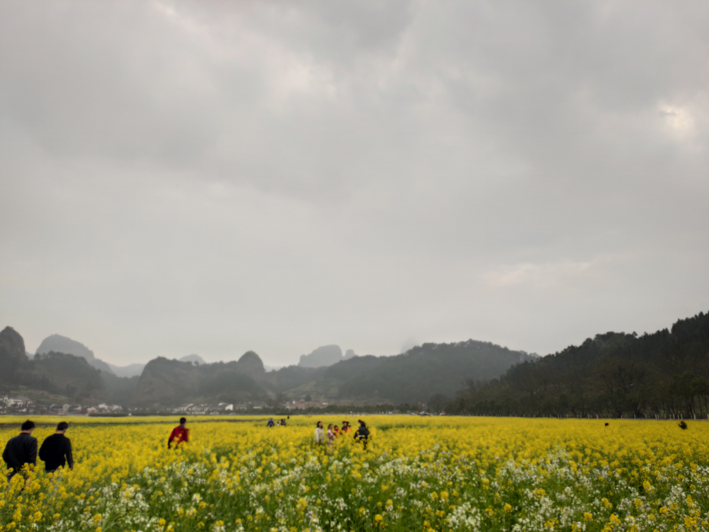
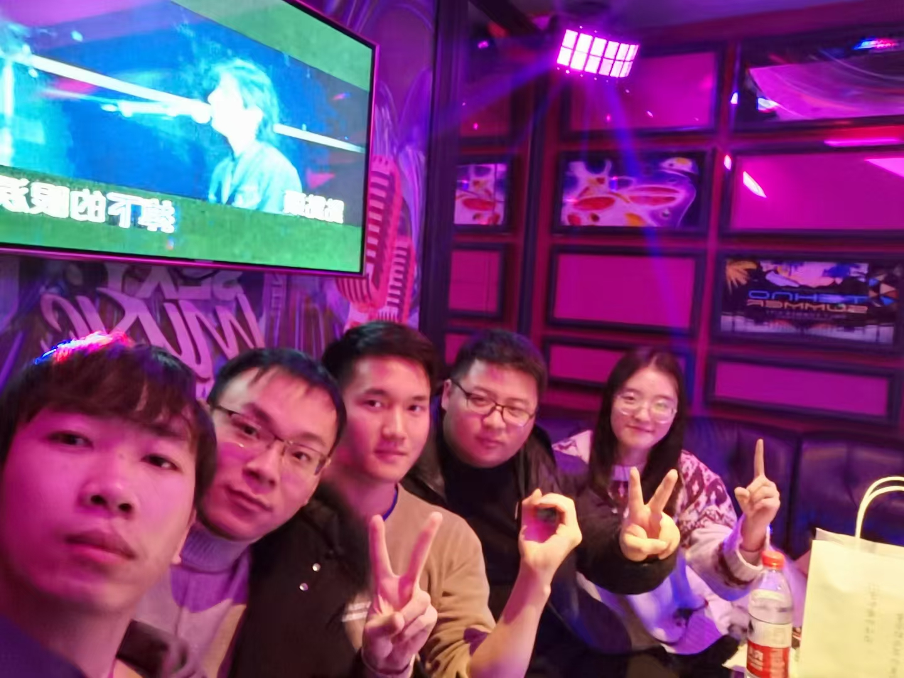

我们听过无数的道理，却仍旧过不好这一生。
当跨年的呼喊声回荡在耳旁，2020年终于走到了终点。这一年从开始就令人难以接受，从年初的新冠疫情爆发，科比坠机去世，仿佛这整一年都蒙上了一层灰色，人们都在说这一年如果重新开始该多好，但到了这辞旧迎新的时候，又在心里难以舍去这令人又爱又恨的2020。受疫情的影响，这一年时间我一半在家，一半在学校，前半年在家上网课，后半年才回校做毕业设计，不记得已经有多少年没有在家待过这么长的时间了。贯穿我这一年始终的，是春招找实习，秋招找工作，这是我待在学校的最后一年了。年末有个时间来回顾这一年，或许以后再也不会经历如此特别的2020。
新冠疫情
十几年前的非典因为我当时年幼，只能从长辈和新闻中听说，这次的新冠让我真正体会到了疫情的可怕。
2020年1月15日，我从南京回家，途径武汉，在高铁上望着疾驰而过的武汉城，不知道在几天之后，这里将最先爆发新冠疫情。新冠病毒最初只是出现在小部分地方，但很快就席卷了武汉，伴随着春节的临近，春运交通加快了疫情传播的速度。1月23日，武汉封城，上一次封城，还是在1911年的武昌起义。在我回家几天后，疫情伴随着春节学生和打工人的返乡潮，带到了这个湖南偏远的小县城。那时候药店和医院门口排起了长长的买口罩的队伍，口罩价格飞涨，涨到十几块一个，却还是严重缺货。政府倡导大家过年在家，不出去拜年，电视新闻整天都在报道新冠疫情的现状和防控措施，街上的ktv、网吧、饭店等人群聚集的场所也关门歇业。我在家时不时听闻哪个村打工的人回来感染新冠病毒了，弄得人心惶惶，大家都不敢出门。为了阻止外面的人回乡过年带来病毒，很多村镇把路都封了，与外界隔离。全国每天几千的新增感染人数，医院的床位和药物供不应求，很多人得到治疗后痊愈出院，还有很多人因为没有得到及时的救治黯然离世。本该喜庆的春节，却被恐惧和担忧笼罩。
但那些面对恐惧却毫不畏惧的勇气，就是人类最美的赞歌。
就像扑灭火灾的消防战士，抗震救灾的救人队伍，那些穿着白衣的医生护士们成为最美的逆行者，前往疫情区与病毒对抗。很多人向疫情区捐献口罩、药物等物资，贡献自己的绵薄之力。各地的抗疫医疗队伍前往武汉，他们与时间赛跑，与死神搏斗，拯救许许多多的生命，期间也涌现出很多感人的故事。这种众志成城，一方有难八方支援的情景，我上一次看到，是在2008年的汶川大地震。青年成为抗击疫情的主力军，正如鲁迅说过的一句话：
”愿中国青年都摆脱冷气，只是向上走，不必听自暴自弃者流的话。能做事的做事，能发声的发声。有一分热，发一分光，就令萤火一般，也可以在黑暗里发一点光，不必等候炬火。此后如竟没有炬火：我便是唯一的光。“
随着防疫力度的加强，新冠疫情逐渐被控制住了，新增感染人数也一天比一天少。每天要在学校的app上填报每日健康状况，去车站坐车的时候也要测体温和查看健康码。疫情改变了许许多多人的生活，本来寒假结束要去学校的我，因为疫情封校，只能在家上网课，春招实习面试也全部是视频面试。当疫情逐渐减弱，在坚持防控的情况下，生活逐渐回到了正轨。
这次的新冠疫情会像之前的非典一样，成为一个时代的记忆。
在家乡
在疫情的影响下，整个冬天差不多都在家里度过，学校也推迟了开学的日期。在春天的微风到来之际，疫情也得到了初步的控制，县里的交通开始恢复正常，街上的门店也逐渐开门营业。原本每年例行的高中同学聚会也推迟至今，我搭上了前往城里的班车。
当时正逢油菜花开，我们来到城里旁边的崀山村旁，黄黄的油菜花田一眼望不到头，远处翠绿的山头耸立，已经很久没有见过这样的景象了，如果不是这突如其来的疫情打乱了一切，我们早已各奔东西，而不是在这春天的家乡相遇。县里最高的山叫做金子岭，而我却还从未去过，于是这次大家便一起驱车前往。山上的公路曲折蜿蜒，幸好同行的同学车技好，开得有惊无险，在半山腰上停下来，俯瞰整个新宁城，这就是生我养我的小县城的全貌，川流的扶夷江水从中穿过，湘水大桥跨在上面，四面环山，中间就是小县城。

八角寨也是第二次来了，还记得第一次来的时候，是高中班主任和各科老师，在高三的时候，带着我们全班同学徒步走了几十里路，从广西爬上了八角寨，大家几十个人从早上八九点钟走到下午四五点，背着大包小包吃的，一路说说笑笑，拍了许许多多的照片，真是一段美好的回忆啊。这次凑了六七个人，在五一假期的时候，重爬八角寨。同学中有人认识景区的门卫，这次门票都省了，直接让我们进去了。爬了一个半小时，终于到了山顶，恰逢“仙人指路”龙头香，意指在山顶最为险要的地方，由专业人员走一条陡峭崎岖的小路，给尽头的小庙插上一根香，保佑游客平安幸福。在下面看着身穿黄色衣服的道长走在上面，下面是陡峭的绝壁，光看就觉得两腿发抖，更不用说站在上面走路，真的佩服他们的勇气。

一个球的故事
疫情在家的时候，一个陪伴了我六年的球在球场弄丢了，我在球场找到天黑，但还是没有找到。昏黄的路灯打在回去的路上，平时打完球回家手里都会拿着一个球，现在空荡荡的两手好像少了什么，再也回不来了。我想有必要讲述一下它这六年的故事。
买它的时候是在高二的寒假，过年拿着压岁钱的我在路上看到一个叫金莱克的门店，门上写着“店铺转让 亏本清仓”的字眼，我透过玻璃看到里面有一个不同寻常的篮球，黑色的表皮，红色的线条纹路，一眼就吸引了我，我就问老板价格，老板说：“一百块拿走，这球质量很好，要不是店铺要关门了，肯定不止这个价。“攥着压岁钱的我底气很足，爽快的买下了。想到不久前班里的篮球刚好坏了，寒假结束后我把它带到了学校，放在班级后面的书架下。待我放月假回家的时候，看到那个金莱克的门店果然倒闭关门了，老板诚不欺我。
高中最期待的课就是体育课了，上一节课一下课班上就有一群男生冲向球场去占场子，十几个男生围着它，将它投向篮筐，人多的话会分成几组，把几个厉害的分开，打五个球，输了的换下一个组，一直赢待在场上打到下课的感觉，真的会让人自信。每次体育课下课都打得汗流浃背，趁着中午或下午吃饭的时候，去寝室洗一个澡。并不是所有的班级都会准备一个篮球，所以周围班级上体育课的时候，就会来我们班借球，第一次借球的时候，他们都会说一句，这个球的颜色真特别。慢慢地，它成为周围班级的宠儿，仿佛像一个炙手可热的明星，而我们都是它的粉丝。转眼来到了高三，每次年级月考的时候，上午考语文或理综，中午总会留出一两个小时的休息时间，这比平时要多半个小时，我们就拿这多出来的休息时间去打球，一边打球还不忘讨论一下刚才考试的题目。再到后来，如果没有课间操的话，我们会拿着这二十分钟去球场投一投篮，然后赶在上课铃响后的几秒狂奔回教室。平时不打的时候它就放在教室后面的书架下，跟着我们一起上课，倾听老师的教导，知晓孟德尔的遗传定律，了解牛顿的万有引力，这么说来也算是球类里面的知识分子。也伴着我们体会冬天的严寒，感受六月的酷暑，它在后面望着电风扇在我们头上呼呼地转着，桌子上的书也越叠越高，黑板上高考的倒计时一天天减少，它在无聊枯燥的高三，带给了我最大的乐趣。
高考过后，我把它带回了家。在那个明媚的夏天，我和家里周围的一群发小们，每天下午五点左右准时在球场打球，除非下雨，这也渐渐成为我这么多年来的一个习惯。那时候总会凑齐很多人，打到精疲力尽天黑才回家。往后上了大学，每次放假回家后的下午四五点钟，我总会拿着它出现在球场，仿佛我和那群发小之间都有了默契，不用电话或者消息通知，总能准时在球场见到他们。慢慢地，我开始与大我们几岁或者十几岁的人打球。家乡球场经常会有一个接近六十岁的老人打球，一手擦板练得炉火纯青，让我们这些年轻人自叹不如，这跨越接近四十年的距离，却在球场上没有任何隔阂。我在球场上结识了很多的朋友，他们或胖或瘦，或高或矮，但都在感受打球的快乐。在经历了无数次水泥地的摩擦和撞击之后，它也磨掉了颜色，粘上了很多弄不掉的灰，表皮变成了灰色，质量也比以前轻了许多，尽显岁月沧桑的样子，躲在床底下黑暗的角落里，只有每次寒暑假回家才能重新见到阳光。大学的四年一晃而过，当我研究生寒假回到家时，曾经的发小也随着年龄的长大，忙于生计，在球场上也很难看到他们的身影。从其他人口中听说，那个六十多岁还坚持打球的老爷爷，已经很久没来了。那些在家附近工作的大叔们，会趁着下班的时候，来球场打会球，尽管他们已经发福，身手也不如以前。望着球场上的我们，仿佛看到了曾经年轻的自己。球场上的人来了一拨又一波，走了一批又一批，那些没有时间而逐渐生疏的人，防住他们的不是对手，而是生活。
当我想回顾它的模样时，却发现我的手机相册里竟然没有一张它的照片。都说睹物思人，或许我怀念的，并不是这个弄丢的篮球，而是那些球场上回不去的时光和曾经一起打球的人。
秋招
受疫情的影响，往年九月初才开始的秋招，今年七月中旬就已经开始了，而且宣讲会和面试全部改为线上。开始我有一个比较纠结的地方就是选择前端还是后端开发，因为这是两个完全不同的方向，面试准备的知识也有很大的不同。因为之前有过前端的实习经历，也感受了前端的工作量，通过咨询一些同学和查找网上的评价，大部分互联网觉得前端相对后端来说开发者比较稀缺，面试容易通过，但是工作量大，而且往后的提升空间不大，而后端虽然开发者多且需求量大，但是后面的提升空间大，于是我选择了秋招投递后端开发岗位，Java语言为主。
笔试面试大多在牛客网上进行。后端面试大致就是先要求你做一下自我介绍，然后让你介绍之前做过的一些项目，在这一部分项目经验和实习经验就显得很重要，是一个加分项。之后会结合项目问一下计算机基础和编程语言的问题，计算机基础包括操作系统、数据库、计算机网络等。编程语言的话，java语言一般会问面向对象、容器（hashmap基本必问）、多线程、JVM（java虚拟机）等，java扩充内容还会问一些spring框架和redis等。我又重新看了本科时候的一些课程，复习java的内容，也看了很多网上总结的java面试题目，在面试中遇到一些偏冷门的问题不知道，例如java的泛型，这也是平时没有复习全面的表现，每次面试完都会记下没有回答上来的问题，防止下次再遇到。面试还有很重要的一部分就是算法题，这一部分甚至会让面试官对你的评价起关键性的作用，很考验面试者的逻辑能力和刷题量。我之前买过一本《剑指offer》的书，里面有很多经典的算法题，我这次有重新看了一遍，又去leetcode上刷了两百多道题，主要针对动态规划、深度搜索、广度搜索、递归、链表、二分等算法思想，其中我觉得最难的就是动态规划，面对一个陌生的题目，之前没有做过的话，很难找到前一项和后一项的递推公式。面试的时候会遇到一些在leetcode的原题，所以为了应付面试，大量的刷题和平时的积累才是正确的做法。
秋招的时候投递过腾讯、字节跳动、阿里、华为、快手。由于之前春招的时候投递过腾讯的微信部门，面试评价并不好，所以这次春招微信并没有捞我，反倒是csig部门捞了我，在面试了一轮之后也没有了消息。字节跳动捞我简历的是产品研发部门，字节的面试包括三轮技术面和一轮hr面，面试都是前两轮技术面较为顺利，面试官问的问题基本都答出来了，几道算法题也都能写出来，但是到了第三面的时候，面试官应该是部门的主管，问的一些操作系统的问题我甚至都没听过，算法题虽然写出来了，但似乎没有做到时间复杂度最优，面完之后感觉有点悬，果然两天之后就收到了感谢信。阿里我投递的是阿里云部门，阿里的面试和有其他公司有所不同，全程采用电话面，没有视频面，但是阿里作为国内java技术最高的大厂，面试官问的许多问题着实难倒了我，要怪也只能怪我没有复习到，毫无意外的挂了。再有了前几次面试失败的经历后，我开始总结经验，抓住痛点，有狂补了一番java语言相关的内容，这才开始后续的投递。华为我投的是上海的无线5G部门，面试分为两轮技术面和一轮主管面，在全面复习之后，这两次的技术面非常顺利，但到了主管面，主要谈论一下上学的经历和作为软件开发者的素养，没有问专业知识，但是问了我一个问题：“如果项目时间非常紧迫，你会采取什么措施来完成项目。”这不明摆着要我回答加班嘛，早就听闻华为加班文化盛行，没想到已经到了直接作为面试题目的程度，着实令我大吃一惊，我对于这个问题没有正面回答，而是一直在打太极，说些提高工作效率之类的话。不知道是其他面试者面试评价比我好，还是其他原因，面完不久后收到了感谢的短信。快手我投递的是是深圳的直播部门，想着离湖南近一点，但是面试的时候给我转到北京去了，想着去北京总部也可以，于是就没再纠结。快手面试包括三轮技术面和一轮hr面，有了之前数次的经验，这次的面试格外顺利，与面试官谈得也很愉快，大概每周一面，断断续续面了接近一个月，也成功通过了面试，拿到快手的offer。
统计一下秋招投递过全部公司的面试情况：
| 公司 | 职位 | 情况 | 面试时间 |
|---|---|---|---|
| 腾讯 | csig后端 | 一面挂 | 一面8.25 |
| 字节跳动 | 产品研发后端 | 三面挂 | 一面二面8.29、三面9.09 |
| 美团 | Android | 一面挂 | 一面7.30 |
| 阿里巴巴 | 阿里云后端 | 一面挂 | 一面7.30 |
| 网易 | 网易云后端 | 一面挂 | 一面8.14 |
| 百度 | 后端 | 一面挂 | 一面8.10 |
| 快手 | 直播后端 | offer | 一面8.08、二面8.19、三面8.24、hr面8.26 |
| 小米 | MIUI后端 | 二面挂 | 一面8.26、二面9.01 |
| 猿辅导 | 后端 | 一面挂 | 一面8.29 |
| 华为 | 上海5G后端 | 三面挂 | 一面二面9.09、三面9.11 |
| 拼多多 | 后端 | 一面挂 | 一面8.15 |
这是我第一次秋招，也是最后一次秋招，从前期的许多次失败面试经历，但后面的拿到offer，总结每次的面试经验真的很重要，也能从其中学到很多的东西，发现自身存在的问题。面试的时候也可以引导面试官往自己擅长的方向问，这也是很重要的面试能力。
崴脚
在家待了大半年之后，疫情终于得到了控制，在夏天的尾声，迎来了开学季。9月4日我回到了学校，恢复了生气的鼓楼，已是八个月未见。学校对于疫情的管控措施也比较多，比如进校门需要刷校园卡或防疫码，食堂和澡堂都需要测体温，离开南京也需要向辅导员和导师请假。
9月24日，在学校北园打球的时候，脚崴了，顿时听到脚踝骨头响了一声，一阵剧痛让我单脚跳到场边，坐倒在地上，痛得说不出话来。在晃了一阵子后，脱下鞋子，脚踝已经肿了起来，疼痛感也减轻了一些。球场和宿舍楼还有一段距离，我走不得路，一起打球的同学就找了辆共享单车，让我坐在上面，推着我回寝室。本来想去校医院拍个片，但那时候已经下午五点多，校医院关门了。在美团外卖上买了云南白药气雾剂，喷了保险液缓解疼痛，回到寝室时，脚已经肿了很大了，看来崴得不轻，得好好修养一段时间了。
往后的很多天，脚还是肿着，着地有痛感，行动不便，连上下床都颇费功夫，出不了宿舍，吃饭只能靠点外卖麻烦室友帮我取，或者麻烦室友去食堂或者超市买点吃的带给我。这是我第三次较为严重的崴脚的，还记得第一次是在高二的时候，也是和同学的打球的时候，踩在别人脚上，结果崴了，那时候正值冬天，脚肿得连鞋子穿不上，坐在教室里面脚很冷，每次喷药的时候都弄得教室里一股味道，同学帮我带饭，晚自习结束后背我回宿舍，真的很感谢他们。第二次崴脚是在大二五一节的时候，打球也把脚崴了，跟辅导员请了假，差不多半个多月没有去上课，当时正值软工大作业，每天垫着脚在寝室写代码，效率也还挺高，带伤也把大作业完成了。前两次的崴脚经历让我更加注意防止受伤，但还是防不胜防，在崴过一次之后，脚踝更加容易受伤，平时走路或者下楼都有可能小崴。
半个多月在寝室走不了路，确实很无聊，当这么久没有下地走路，我甚至忘记了两只脚走路是什么感觉。崴脚之后正确的治疗也很重要，崴脚的时候应该立即用冷水或冰水敷，这样可以减慢血液流动的速度，防止崴伤的地方肿大，之后应该立即喷一下跌打扭伤的药，平时或者睡觉的时候应该把脚抬高，高于心脏部位，有利于消肿。崴伤几天后，应该用热水泡脚，加快血液循环的速度，排除淤血，严重的话应该去医院打石膏固定。在大半个月的修养之后，终于能勉强走路了，去外面见见很久没见的阳光，有种重获新生的感觉，苦难只是暂时的，生活终究是美好的。
沉默的真相
《隐秘的角落》带出的“爬山”梗火了之后，我便去看了这部电视剧，但却没有觉得太好看，而不久之后推出的《沉默的真相》绝对是我今年看过最好看的电视剧，如果说《隐秘的角落》彰显人性黑暗，那么《沉默的真相》才是真正地反应社会与人心，让人感觉十分真实。
这部剧一共十二集，我是一口气连续看完的，全程无尿点，看完之后回想起来感觉意犹未尽，震撼人心。
年轻的老师侯贵平去山区支教，发现有人将女学生作为礼物送给官员进行贿赂，已达到利益目的，如果学生如从，就会遭到毒打。侯贵平开始调查此事，发现官官相护，黑社会与官勾结，他自己也被黑社会威胁，被杀害扔到河里，对外谎称猥亵妇女，畏罪跳水自杀。
几年之后，年轻的监察官江阳从侯贵平的女友李静口中得知此事，本不想帮忙，但在女友的怂恿下答应查明真相。江阳的调查遭到当地公安局大队长李建国的百般阻挠，好不容易从当年的法医手里得到侯贵平的尸检报告，才得知侯贵平不是溺水而亡，而是他杀。江阳又去走访当年诬陷侯贵平猥亵的寡妇丁春妹，然后丁春妹早已被人威胁不要说出任何真相，待江阳走后不久，丁春妹也被人杀害。调查至此，江阳感受到案子的不容易，为了不拖累女友，毅然与吴爱可分手。一同调查此案的警察朱伟也受人嫁祸，进入警校进修三年。曾经的老师张超和李静订婚，也告诫江阳不要把李静卷入此案。至此，江阳只剩自己一人，他感受到前所未有的无助。
三年过后，朱伟从警校出来了，江阳也结婚了。此时案情峰回路转，江阳注意到了杀害丁春妹的嫌疑人王海军，然后王海军在审讯过程中蹊跷死亡，在尸检时身上发现针孔，断定是他杀。然而王海军家人已被金钱收买，拒绝尸检，立即火化，唯一的证据又被销毁。儿子也被黑社会绑架，最终才脱险，为何不连累孩子和妻子，江阳选择离婚。后来江阳又因为被人在家藏了三十万现金，被诬陷贪污，入狱三年。出狱后，江阳患上了疾病，开了一家手机修理铺维生，三十出头的年纪，看起来已经十分沧桑。一直困扰他多年的，是侯贵平案的真相，而现在凶手还在逍遥法外，他不能瞑目。得知自己时日无所，江阳设计了一个计划，用自己的死，来引起社会的关注，引来破案高手严良重新调查此案，还侯贵平一个清白…
历经十年，江阳从一个前途光明、年轻帅气的监察官，到行李箱里一具冰冷的尸体，失去了前途，失去了爱情，甚至失去了生命，只为了求得一个真相。剧中的黑社会与贪官勾结，对江阳百般阻挠，杀人、烧照相馆、金钱收买、绑架小孩，各种手段无所不用，将真相掩埋，但却还是阻挡不了江阳的决心。原著小说叫《长夜难明》，居中的江阳就像在黑夜中摸索真相，无边无际的黑暗压得他喘不过起来， 死后才能看到破晓。
跨年
有三个同学本科毕业后在苏州工作，本来想国庆去苏州找他们叙叙旧，但是突如其来的崴脚，只能把去苏州的事延期至元旦，12月30日，我和南航的同学搭上了前往苏州的高铁。
南京离苏州很近，高铁只需要一个小时的路程。这是我第二次来苏州，第一次来还是在去年的春天。苏州的温度在这一天降了很多，仿佛我们把南京的冷气也带了过来，走在路上，呼呼的冷风吹在脸上，格外刺骨。到苏州后把行李放在预定好的酒店，就去和苏州的三个同学会和。几个人许久不见，看到了格外亲切。五个人找了个火锅店，一边吃一边聊。热辣的火锅驱除了外面带来的寒气，有两个同学在苏州的家教机构老师，另外一个同学在苏州的一家机械制造的公司工作。吃火锅最难解决的就是生菜了吧，把生菜放在辣锅里，吸油吸辣，这时候吃上一口，绝对难忘。对于一群湖南人来说，谁来挑战一下，由我和南京同行的那个同学通过石头剪刀布来决定，输的吃下这片沾满油辣的生菜。运气站在我这一边，不出意外地我赢了，看着那位同学吃下生菜被辣的样子，别提我们有多幸灾乐祸了。
第二天也就是2020年的最后一天，我们打算白天去苏州的华谊兄弟电影城。同行的两个同学急于展示他们的车技，想要租一台共享汽车，自己开车去那。两个人折腾了共享汽车半个多小时， 终于弄懂是怎么启动的了，两个愣头青甚至还在手机导航下走错了路，本来只需要半个多小时的路程，硬生生开了一个多小时。华谊兄弟电影高价的门票成功把我们劝退，于是我们便开着共享汽车，开始了苏州自驾游。在吃中饭的时候，把车停在路边，还领到了一张罚单。沿着阳澄湖旁边的公路一路兜风，来到一座寺庙旁，在闲逛一会后，赶在天黑之前，来到了平江路历史文化街区。其实这里我好像上次就来过这里，不过这次在晚上，在绚烂灯光的映衬下变得更漂亮。这里是苏州的老城区，一股江南水乡的风格。石板桥搭配静静流淌的小河，斑驳的砖墙，时不时出现的商铺叫卖声，路边偶遇穿着汉服的小姐姐，仿佛置身千年前古老的姑苏城。逛完平江路后的我们决定去ktv跨年，吃完饭到ktv的时候，已经接近晚上十点了，ktv包厢几乎爆满，看来这真是一个跨年的好地方。2021年如期到来，2020成为过去，在0点的时候，此时ktv的屏幕上正播放的是周杰伦的《世界末日》：“天灰灰 会不会 让我忘了你是谁 夜越黑 梦违背 难追难回味“被疫情围困的2020已经成为过去，既往不恋，纵情向前。

完。